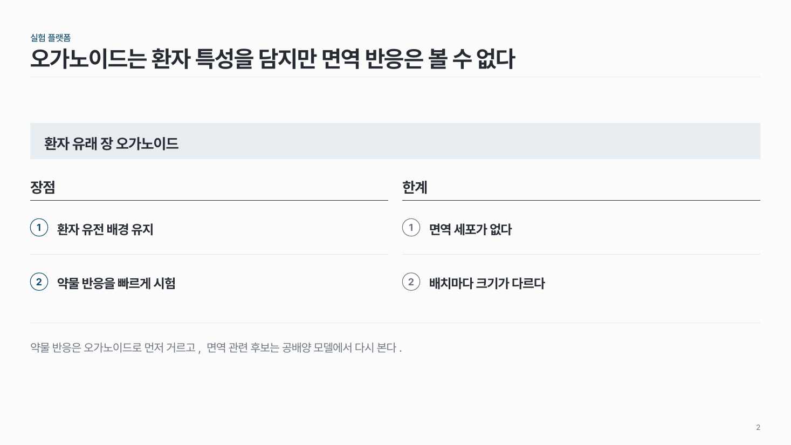
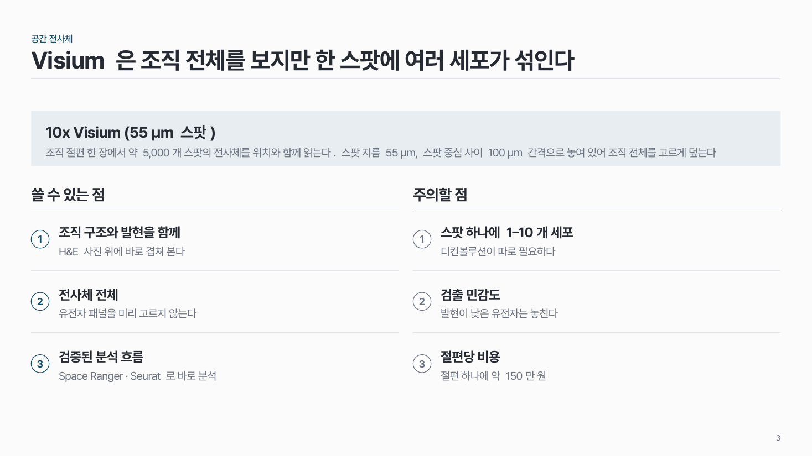

장단점 comp-04
방법 하나의 장점과 한계를 같은 개수로 나란히. 보완 계획은 맨 아래 결론 줄에.

이 시안
장점·한계 3개씩 + 설명 한 줄 · 결론 줄에 보완 계획
슬라이드 제목: 16S 시퀀싱은 넓게 훑기에 맞고, 종 수준 질문은 따로 보완해야 한다
언제 쓰나
방법 · 플랫폼 하나를 평가할 때요. 16S 시퀀싱, 오가노이드 모델, Visium 처럼 채택 근거와 한계를 같이 보여 주고, 어떻게 보완할지까지 말해야 하는 장에 맞아요.
구성
- 맨 위 띠에 대상 이름 (+ 한 줄 설명).
- 왼쪽 장점, 오른쪽 한계. 같은 개수 2–3개.
- 항목마다 번호 + 키워드 (+ 설명 한 줄).
- 보완 계획은 결론 줄 으로.
지킬 것
- 두 칸의 항목 수를 같게.
- 키워드는 20자 안팎.
하지 말 것
- 장점은 초록, 한계는 빨강으로 칠하지 않아요 (신호등이 되고, 색약이면 구분이 안 돼요).
- 한계만 길게 쓰고 보완 계획을 빼먹지 않아요.
시안 비교
같은 내용을 옵션만 바꿔 그렸어요. 그림을 누르면 크게 보여요.
A장점·한계 3개씩 + 설명 한 줄 · 결론 줄에 보완 계획
슬라이드 제목: 16S 시퀀싱은 넓게 훑기에 맞고, 종 수준 질문은 따로 보완해야 한다

B2개씩, 키워드만 · 결론 줄
슬라이드 제목: 오가노이드는 환자 특성을 담지만 면역 반응은 볼 수 없다

C3개씩 · 대상 설명 두 줄 + 소제목 바꿈
슬라이드 제목: Visium 은 조직 전체를 보지만 한 스팟에 여러 세포가 섞인다